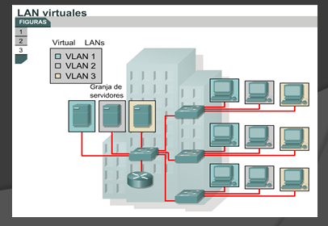
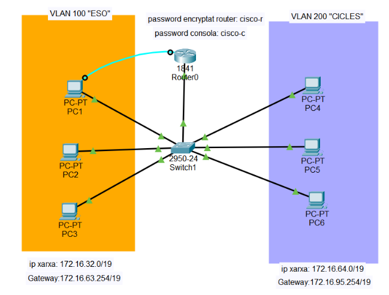

Benvinguts al mòdul de Xarxes Locals

En aquesta unitat aprendrem com es comuniquen ordinadors que pertanyen a VLANs diferents dins d'una mateixa xarxa. Farem servir Packet Tracer per practicar la configuració real d'un router i un switch.
Objectius d'aprenentatge:
- Entendre què és una VLAN i per què se segmenten les xarxes.
- Comprendre el funcionament del trunking 802.1Q.
- Configurar un Router-on-a-Stick a Packet Tracer.
- Diferenciar entre enrutament amb router extern i amb switch de capa 3.
Què és una VLAN?
Una VLAN (Virtual Local Area Network) és una xarxa lògica que agrupa dispositius encara que estiguin connectats a switches físics diferents. Permet segmentar el trànsit, millorar la seguretat i reduir dominis de broadcast.
- VLAN de dades: per al trànsit normal dels usuaris.
- VLAN de veu: per a telefonia IP.
- VLAN de gestió: per administrar els equips de xarxa.
- VLAN nativa: trànsit sense etiquetar en un enllaç trunk.
Quan dues VLANs diferents han de comunicar-se, necessiten un dispositiu de capa 3 (router o switch multicapa) perquè els switches normals només treballen a nivell de capa 2.
Enrutament Inter-VLAN
Hi ha dues formes principals de fer enrutament entre VLANs:
| Mètode | Descripció | Ús habitual |
|---|---|---|
| Router-on-a-Stick | Un únic enllaç físic (trunk) entre el switch i el router, amb subinterfícies virtuals per a cada VLAN | Xarxes petites o de laboratori |
| Switch de Capa 3 (SVI) | El propi switch fa d'enrutador mitjançant interfícies virtuals (SVI) per a cada VLAN | Xarxes empresarials més grans |

Activitat: Configura un Router-on-a-Stick
Segueix aquests passos al teu propi fitxer Packet Tracer:
- Crea dues VLANs al switch (per exemple VLAN 10 i VLAN 20).
- Assigna els ports d'accés corresponents a cada VLAN.
- Configura el port cap al router com a trunk (
switchport mode trunk). - Al router, crea dues subinterfícies (per exemple
g0/0.10ig0/0.20). - Assigna a cada subinterfície l'encapsulació
dot1Qcorresponent i una adreça IP de la seva xarxa. - Configura les IP dels PC amb la porta d'enllaç corresponent a cada subinterfície.
- Comprova la connectivitat amb
pingentre PCs de VLANs diferents.
Quiz ràpid d'autoavaluació
1. Quin protocol s'utilitza per etiquetar el trànsit en un enllaç trunk?
2. En un Router-on-a-Stick, quantes interfícies físiques necessita el router com a mínim?